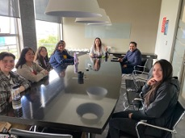

Fábrica 4.0 INACAP
Transformamos ideas en soluciones con impacto real
Transformamos ideas en soluciones con impacto real
Una comunidad creativa que une a estudiantes, docentes y empresas para resolver desafíos reales con tecnología de vanguardia. Impulsamos la innovación, el aprendizaje práctico y el futuro de la industria.

Escríbenos y co-creemos el futuro de la innovación tecnológica. Cada sede INACAP tiene un equipo listo para apoyarte.
